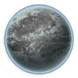

Anian Prime
Anian Prime is not a planet I would recommend visiting. Sentinels are scarce here. The planet however will do its best to scare you away. Weather and storms tend to bring about fire and ash. If you're coming from an extremely cold world, this might be a good winter home to visit.